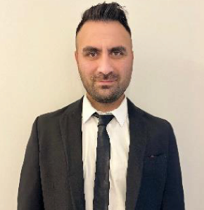

Senol Dogan
QA (Quality Assurance)Software Tester & Software Developer

Summary
- During an intensive bootcamp (May 2023 – November 2023), I acquired extensive skills in applying SDLC methods and conducting smoke tests,
functional tests, integration tests, regression tests, manual tests, and black-box tests. I successfully developed test cases, verified bug reports,
and devised solutions for complex problems. My work is characterized by a structured approach and a commitment to continuously developing my skills.
Education
- High School Ankara Turkey 2000-2004
- German Language Education 2004-2006
- Training as an Industrial Mechanic 2009-2012
- Bootcamp Software Test Engineer 2004-2006
Work Experince
-
2015- currently
Experienced industrial mechanic with over ten years of professional experience in assembling and quality assurance of complex systems.
Alongside my job, I completed an intensive bootcamp in software testing and test automation and continuously learn new technologies such as Cypress.
I also hold the ISTQB Foundation Level certificate and have completed additional training as a training supervisor with certification.
My determination and eagerness to learn enable me to quickly adapt to new challenges and contribute to process optimization.
Currently, in my role as a training supervisor, I support apprentices in their development.
Skills
- Test Automation/ Selenium, TestNG, Cucumber, Cypress, Maven, Jenkins, Rest-Assured
- Language/ Java
- Tools/ Jira, Git, GitHub, Postman, MySQL
- Methodology/ Agile, Scrum
Certification
- ISTBQ Foundation Level
- SDET
Languages
- English (Intermedita)
- German (Fluent)
- Turkish (Fluent)
My Hobbies
Contact Me